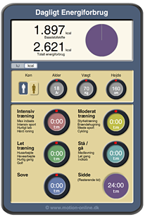

Kroppen er ligesom en bil med benzin og benzinforbrug. Bilens motor bruger benzin for at virke, og vi skal derfor fylde benzin på bilen. Kroppen bruger ikke benzin, men udnytter den energi, der er i mad. Vi spiser for at kroppen kan fungere.
Hvis vi indtager for meget energi i forhold til vores forbrug, gemmer kroppen energien som fedt. Det er smart, hvis der en dag er hungersnød, da kroppen så kan bruge fedtdepoterne til at overleve. I den vestlige verden har vi ikke hungersnød, og en stor del af jordens befolkning er blevet overvægtige. Mange spiser alt for meget i forhold til, hvad de bruger af energi, og kroppen bliver ved med at producere fedt.
Energi i maden og den aktivitet vi laver (sport, rengøring, løb, gang, at sidde osv.) måles enten i kilokalorier (Kcal) eller i Kilojoule (kJ). Vi vil fremover kun bruge enheden Kilojoule (kJ).
Om en person tager på eller taber sig er et meget simpelt plus/minus regnestykke. Indtager en person energi svarende til 10.000 kJ på en dag, men kun forbruger 7000 kJ vil der være et overskud af 3000 kJ. Den overskydende energi bliver omdannet til fedt.
Hvor meget energi en person bruger på en dag afhænger af køn, vægt, muskelmasse, genetik og aktivitetsniveau. Det er derfor svært at give et præcist svar på, hvad individuelle personer bruger. Et gennemsnitligt interval er dog, at kvinder forbrænder mellem 8.000 kJ og 11.000 kJ pr dag afhængig af aktivitetsniveau. Mænd forbrænder gennemsnitligt mellem 11.000 kJ og 15.000 kJ pr. dag afhængig af aktivitetsniveau. (Kilde: sundhedsguiden.dk)
Du kan klikke dig ind på motion-online.dk og forsøge at finde frem til et mere præcist bud på, hvor meget energi du bruger om dagen, ved hjælp af denne beregner.
De næste sider vil vise dig, hvordan man finder ud af, hvor meget energi (kJ), der er i mad, hvor meget man forbrænder ved forskellige aktiviteter og vise dig, hvordan en lille ændring i din dagligdag kan ændre din vægt.
Til daglig benyttes to forskellige enheder på energi i maden. Den ene er Kcal og den anden er kJ.
Betegnelse ’kalorier’ (Kcal) stammer fra USA og bliver ofte brug i f-eks- dameblade. Selvom vi siger ordet ’kalorier’ betyder Kcal faktisk kilokalorier. Det er forvirrende, da der også findes ’rigtige’ kalorier med enheden Cal.
Indenfor videnskaben benyttes enheden Joule (J) og Kilojoule (kJ). KJ er den betegnelse, som I vil møde fremover i jeres undervisning (f.eks. på HF). Derfor benytter vi enheden kJ på de næste sider. Man kan regne fra Kcal til kJ ved at gange med 4,2.
Læs mere om sammenhængen mellem Kalorier og Kilojoule HER
Om omregning fra Kcal til kJ:
motion-online.dkBeregn dit daglige energiforbrug:
sundhedsguiden.dkSammenhængen mellem Kalorier og Kilojoule:
fitness.dk